Người chơi thân mến, đã lâu rồi Revelation Skyblock chưa có bản cập nhật nào lớn vậy nên ở phiên bản 5.1 - Hạm Đội Tiến Công, Trận Đoạt Giếng Mỏ Khởi Tranh sẽ được ra mắt vào ngày 10.01.2026 sắp tới. Hãy cùng đón chờ những nội dung mới sắp diễn ra nhé!!!
MỤC LỤC
1. Chi tiết bảo trì
2. Nội dung cập nhật mới
CHI TIẾT BẢO TRÌ
Thời gian bảo trì:
Máy chủ đã cập nhật ngầm dữ liệu hoàn toàn. Toàn bộ người chơi đều không bị ảnh hưởng
NỘI DUNG CẬP NHẬT MỚI
I. Ra mắt tính năng mới HẠM ĐỘI dành cho người chơi từ cấp [✦10] đến [✦500]
- Tại đây bạn sẽ cùng với thành viên cùng chiến hạm của mình tham gia đóng góp điểm để mở khóa những tính năng đặc biệt như kho đồ riêng của hạm, thiên phú,... và hình ảnh chi tiết sẽ được liệt kê bên dưới hoặc có thể dùng lệnh /hamdoi trong game để xem trước:
- Giao diện chính
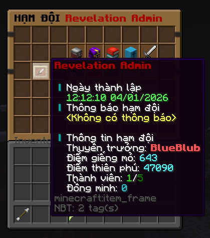
- Nâng cấp nhánh thiên phú của hạm đội
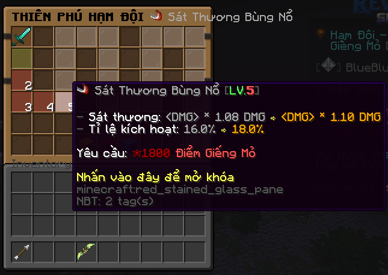
- Kho đồ của hạm đội
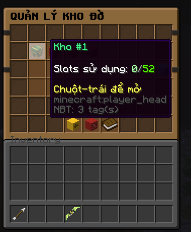
- Thêm đồng minh giữa các hạm đội
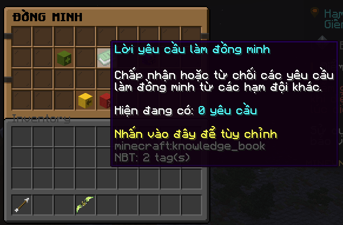
II. Ra mắt hoạt động mang tính đồng đội mới TRẬN ĐOẠT GIẾNG MỎ
- Sau khi đạt cấp nhân vật [✦200] và tạo hoặc đã tham gia hạm đội xong người chơi có thể tham gia hoạt động này, chi tiết về hoạt động được liệt kê dưới hình bên dưới hoặc có thể dùng lệnh /skgiengmo trong game để xem trước:
- Tham gia trận đoạt giếng mỏ
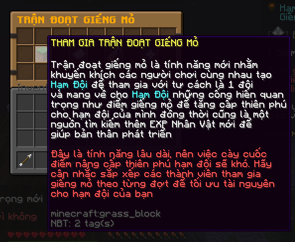
- Hướng dẫn, quy tắc tính điểm hoạt động
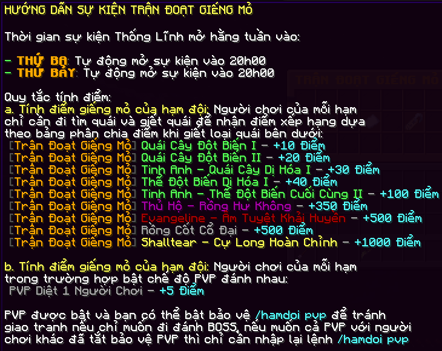
- Thưởng tham gia hoạt động
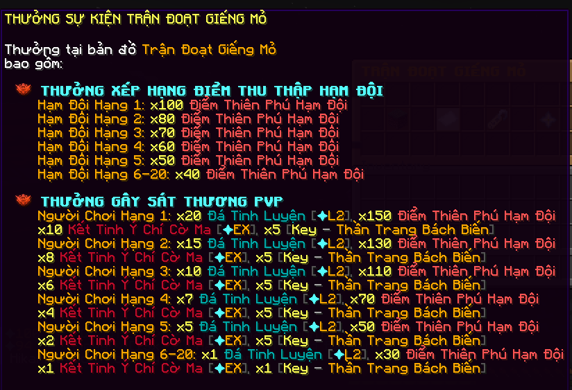
- Thưởng danh hiệu độc quyền
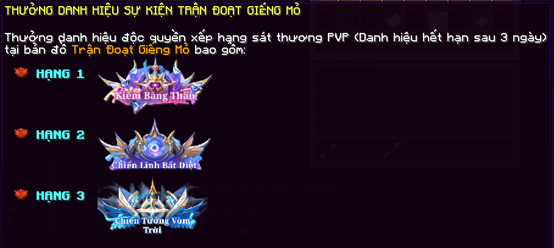
- Ngoài thưởng cơ bản ở trên vẫn còn thêm thưởng đánh boss với rất nhiều EXP Nhân Vật, Công Huân,...
III. Mở tính năng cầu nguyện trước vật phẩm mới Đá Chúc Thánh
- Khi tham gia và nhận thưởng từ hoạt động giếng mỏ bạn sẽ nhận được vật phẩm tên Kết Tinh Ý Chí Cờ Ma, vật phẩm này dùng để cầu nguyện ra vật phẩm chỉ định tên Đá Chúc Thánh
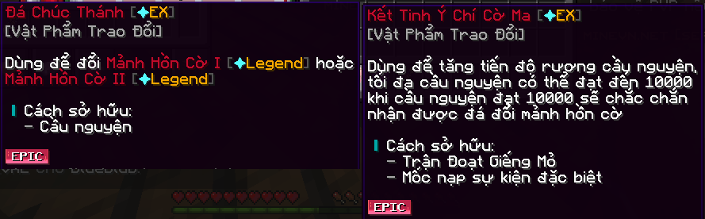
- Đá Chúc Thánh dùng để đổi Mảnh Hồn Cờ I hoặc Mảnh Hồn Cờ II
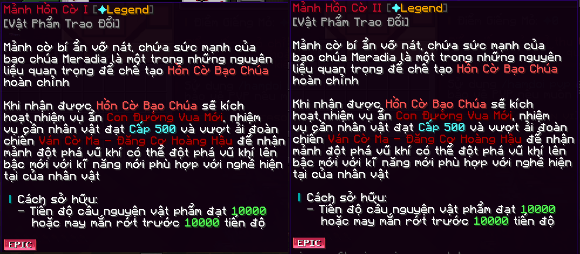
- Từ 02 Mảnh Hồn Cờ I và Mảnh Hồn Cờ II có thể ghép thành 01 Hồn Cờ Bạo Chúa dùng để đổi vũ khí thức tỉnh trong phiên bản cập nhật sau
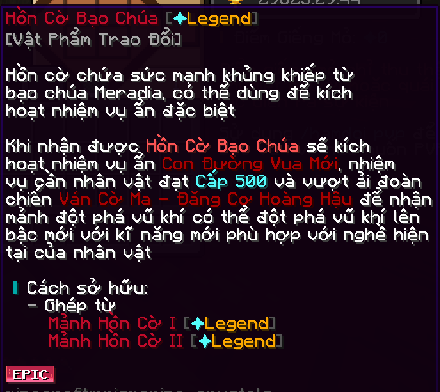
IV. Thông tin thêm Bản Đồ Trận Đoạt Giếng Mỏ
- Để tránh bị lạc đường nên bên dưới sẽ là layout của map giếng mỏ
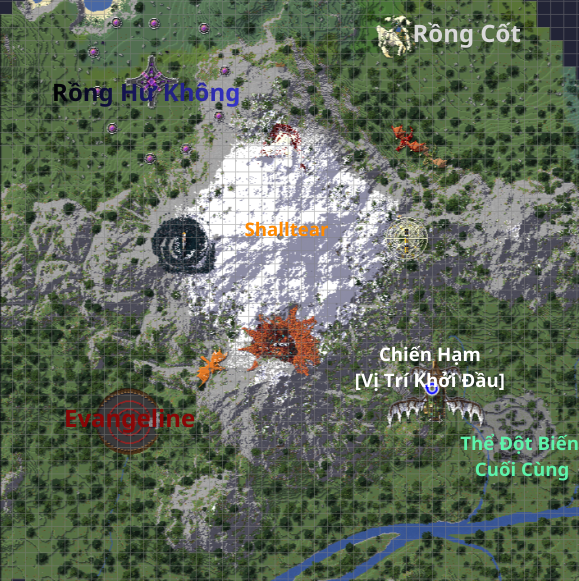
Bonus. Giftcode Update [50 Lượt Nhập]
- Anh bạn thật sự đã xem hết chi tiết bản cập nhật này? Vậy thì đây là thưởng của bạn!
- Đăng nhập vào Revelation Skyblock và nhập /code RVLUPDATE51. Yêu cầu có thời gian chơi trên 25 giờ tại máy chủ mới nhập được nhé!